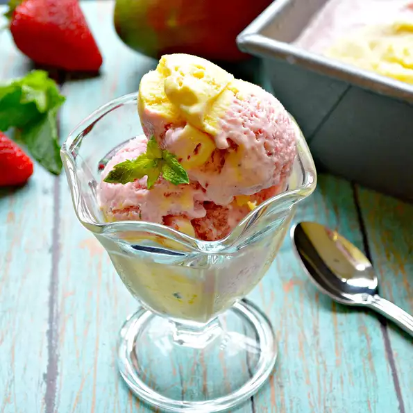

Strawberry-Mango Icecream

Description
Inspired by The Mastercard (a frozen strawberry-mango concoction that is served on Royal Caribbean® cruise
ships), this ice cream transports you immediately to the tropics, with a surprise of fresh spearmint!
Ingredients
- 3 cups half-and-half
- 1 cup white sugar
- 3 egg yolks
- 1/2 tablespoon chopped fresh spearmint
- 1 teaspoon coconut extract
- 2 cups sliced fresh strawberries, pureed
- 1 medium mango, pureed
Steps
- Pour half-and-half into a medium saucepan and place over medium heat. Add sugar and stir until dissolved.
Continue to heat until half-and-half is hot, but do not let it come to a boil.
- Whisk egg yolks in a small bowl until pale yellow.
- Slowly add about 1 cup of the half-and-half mixture to the egg yolks, whisking constantly. Repeat with
another cup. Pour the egg yolk mixture into the saucepan with the remaining half-and-half mixture and cook
over medium heat until the mixture thickens and coats the back of a spoon. Do not let the mixture boil.
- Remove from heat and stir in spearmint and coconut extract. Pour mixture into a bowl with a pour spout and
let cool for 30 minutes. Refrigerate, 8 hours to overnight.
- Pour 1/2 of the mixture into an ice cream maker and churn to the consistency of soft-serve. Add strawberry
puree. Continue to churn until ice cream has thickened. Transfer ice cream to a bowl and clean out the ice
cream maker with a rubber spatula. Place strawberry ice cream in the freezer.
- Pour the remaining ice cream base into the ice cream maker and churn to the consistency of soft-serve. Add
mango puree. Continue to churn until the ice cream has thickened.
- Remove strawberry ice cream from the freezer. Place a large scoop of strawberry ice cream in a 9-inch loaf
pan using 2 large spoons. Top with a large scoop of mango ice cream. Fill up the loaf pan, continuing to
alternate flavors. Cover with plastic wrap and place into the freezer for a minimum of 4 hours.
Nutrition Facts
Per Serving:
266 calories; protein 4.1g; carbohydrates 36.7g; fat 12.3g; cholesterol 110.4mg; sodium 41.3mg.